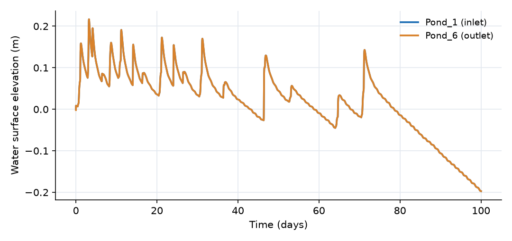
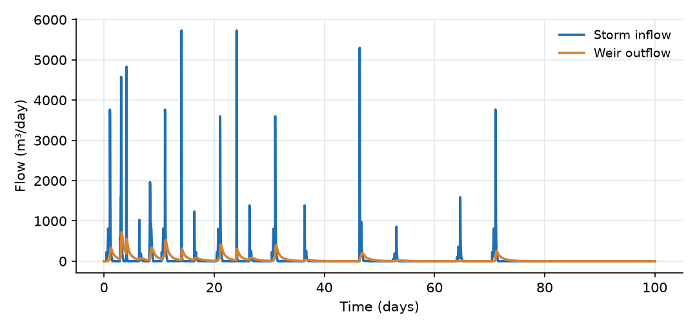
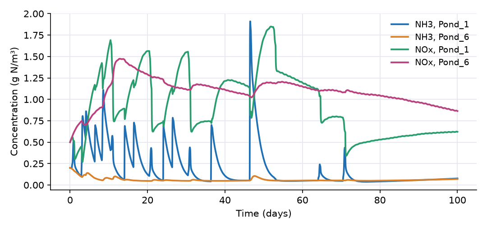
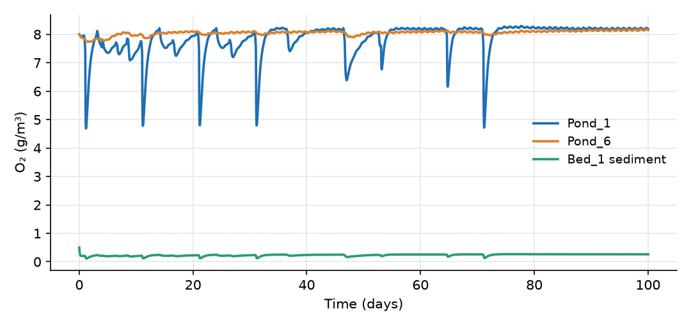
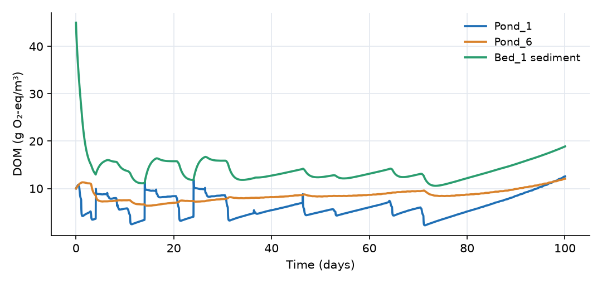
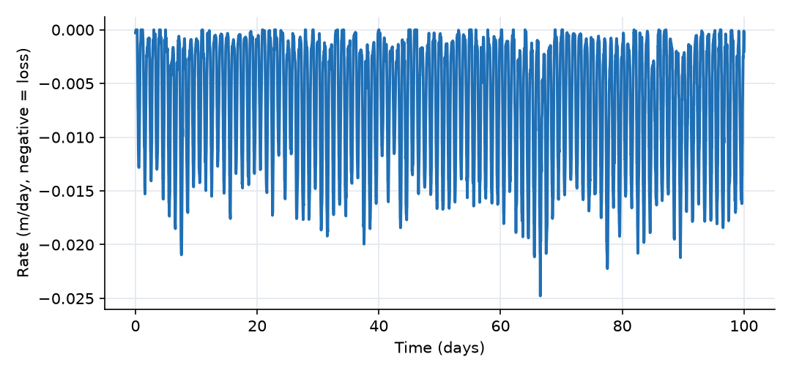

What this model represents
A wet pond (retention pond) is a stormwater control measure that keeps a permanent pool of water. Runoff entering the pond mixes with the pool and is held for days to weeks, long enough for biological and chemical processes to transform dissolved nutrients and organic matter. The pond bed accumulates organic sediment, which consumes oxygen and supports denitrification.
This model represents a pond with a permanent pool of 1104 m³ divided into six cells that water passes through in series, from a forebay at the inlet to a small pool at the outlet weir. Each cell sits on a 0.1 m layer of organic bed sediment, which leaks slowly to the underlying aquifer. The model tracks water (storm inflow, weir outflow, seepage and Penman evaporation) and five constituents (dissolved organic matter, oxygen, ammonia, nitrate and particulate organic matter in the bed) over 100 days of recorded storms and weather. It can be used to study how a pond's internal processes change the quality of the water it releases, and where the nitrogen goes.
How it works
Pond cells. Each Pond cell has the stage-storage curve S = α·d^β with β = 2, so its depth and surface area are (from the plugin expressions)
d = (S²/(α·(S + 0.1)))^(1/β) ≈ (S/α)^(1/2), A_surface = α·β·d^(β−1) = 2·α·d
and its water surface elevation is h = z_bottom + d. Cell bottoms step down from −0.80 m (Pond_1) to −0.914 m (Pond_6), so the permanent pool (h = 0 m, the weir crest) is 0.8 to 0.9 m deep.
Flow between cells and out of the pond. The wide_channel links compute Manning flow for a wide rectangular section from the water-surface difference:
Q = 86400 · sqt((h₁ − h₂)/L)/n · w · d̄^(5/3) (m³/day)
where d̄ is the mean depth of the two cells, w the width, L the length and n = 0.1. sqt is OpenHydroQual's regularized square root, √(x²/(|x| + 0.0001)) with the sign of x. The outlet weir passes Q = 33 000·max(h₆ − 0, 0)^2.5 m³/day.
Evaporation. Penman_ET computes a rate (m/day, negative for water loss) by the Penman combination equation:
E = Δ/(Δ + γ)·E_r + γ/(Δ + γ)·E_a E_r = −f_s·R_s/(λ_v·1000)·86400, λ_v = 2 501 000 − 2370·T (J/kg) E_a = B·e_s·(RH − 1), B = 0.000102·f_w·U/ln(z₂/z₀)² (m/day/Pa) e_s = 611·exp(17.27·T/(237.3 + T)), Δ = 4098·e_s/(237.3 + T)² (Pa and Pa/°C)
with R_s the solar radiation (W/m²), T the air temperature (°C), RH the relative humidity, U the wind speed, γ = 66.8 Pa/°C, z₂ = 2 m, z₀ = 0.0003 m and scale factors f_s = f_w = 0.5. The radiation term uses the incoming solar radiation scaled by f_s in place of net radiation. Each pond loses E·A_surface·d/(d + 0.001) m³/day; the last factor shuts evaporation off as a cell runs dry. Evaporation removes water but no solutes, so it concentrates them.
Bed sediment and seepage. The bed cells and the aquifer are Groundwater cell blocks, whose head is h = z_bottom + depth + (θ − n)/S_s. Water moves from each pond into its bed by Darcy's law across half the bed thickness, Q = A·K·(h_pond − h_bed)/0.05, and from the bed to the aquifer, Q = A·K·(h_bed − h_aquifer)/1. With K = 0.001 m/day and the aquifer head near −2 m, about 2 mm/day of water seeps through the bed.
Transport of dissolved constituents. On every link, a constituent moves with the water (upstream concentration times flow) and by exchange proportional to the concentration difference:
J = Q·C_upstream + ((D·A + α_L·Q)/L + v_ex·A)·(C_from − C_to)
with molecular diffusion coefficient D = 0.0017 m²/day for DOM, O2, NH3 and NOx, and no dispersivity (α_L = 0). Between a pond and its bed (A = bed area, L = 0.05 m) this gives an exchange velocity D/L = 0.034 m/day, which couples the water column to the sediment pore water. On the six Reaeration links the oxygen exchange velocity v_ex = 1 m/day applies over the pond surface area, giving a reaeration flux of 1 m/day × A_surface × (8.66 − O2) g/day. Water and the other constituents do not cross these links.
Reactions. Six reactions apply in every block. OpenHydroQual multiplies each rate (g/m³/day) by the block's water volume and by the stoichiometric coefficients:
| Reaction | Rate | DOM | O2 | NH3 | NOx | POM |
|---|---|---|---|---|---|---|
| Aerobic_decomposition | k_H·DOM/(DOM+K_s)·O2/(O2+K_o) | −1 | −1 | +η_on | ||
| Nitrification | k_N·O2/(O2+K_on)·NH3/(NH3+K_n) | −4.57 | −1 | +1 | ||
| Denitrification | k_dn·K_on/(K_on+O2)·NOx/(NOx+K_dn)·DOM/(DOM+K_s) | −1 | +η_on | −η_n | ||
| POM_hydrolysis | k_h·POM | +1 | −1 | |||
| POM_respiration | k_p·POM·O2/(O2+K_o) | −1 | +η_on | −1 | ||
| POM_denitrification | k_pdn·POM·K_on/(K_on+O2)·NOx/(NOx+K_dn) | +η_on | −η_n | −1 |
with k_H = 2 g/m³/day, K_s = 20 g/m³, K_o = 0.5 g/m³, η_on = 0.04, k_N = 1 g N/m³/day, K_n = 1 g N/m³, K_on = 0.5 g/m³, k_dn = 2 g/m³/day, K_dn = 0.5 g N/m³, η_n = 0.35, k_h = 0.0004 per day, k_p = 0.001 per day and k_pdn = 0.0005 per day. Because POM exists only in the bed cells, the three POM reactions act only there. This is how a single set of reactions gives the sediment a much higher oxygen demand than the water column: with 20 000 g/m³ of POM, sediment respiration can consume up to 20 g O₂/m³/day of pore water, against at most 2 g/m³/day for DOM decomposition in the water.
Simulation settings. The run covers 100 days with an initial time step of 0.02 day and a maximum step of 0.05 day (max_timestep_increase_factor = 2.5). With timestep_clamp_series = All time series the solver does not step over changes in the 30-minute inflow and load series, and make_timeseries_uniform = No uses the input series exactly as supplied. Outputs are reported every 0.02 day.
What to look for in the results
- Water budget. Over 100 days 6005 m³ enters. The weir releases 4310 m³, evaporation removes 1680 m³ and seepage 500 m³, together 470 m³ more than the inflow, which the pool supplies from storage. Evaporation averages 6.4 mm/day. After the last weir flow on day 77 the pool falls by 0.2 m, and Pond_1's surface area shrinks from 894 to 675 m².
- Nitrification. The inflow carries 1.12 g N/m³ of ammonia (flow-weighted). Ammonia peaks at 1.9 g N/m³ in Pond_1 during storms but stays below 0.2 g N/m³ at the outlet, and the discharge averages 0.08 g N/m³. Nitrate does the opposite: 0.26 g N/m³ in the inflow, 1.08 g N/m³ in the discharge.
- Nitrogen budget. Of 8.3 kg of inorganic nitrogen entering (6.7 kg NH3-N and 1.5 kg NOx-N), the weir releases 5.0 kg (0.35 kg NH3-N and 4.6 kg NOx-N) and seepage 0.6 kg. Ammonia released by organic matter decomposition adds to the total. Nitrate diffusing into the bed (7.6 kg over the run) is removed by sediment denitrification, the main permanent nitrogen sink.
- Oxygen. Reaeration supplies 181 kg of O₂ over the run, far more than the inflow (31 kg). The bed takes 73 kg, a sediment oxygen demand of 0.28 g O₂/m²/day over the 2624 m² of bed. The water stays near the 8.66 g/m³ saturation value except during storms; the bed pore water stays near 0.2 g/m³.
- Organic matter. The bed is a net source of DOM to the water (64 kg over the run, from POM hydrolysis), so the discharge carries more DOM (8.1 g/m³ flow-weighted) than the inflow (4.4 g/m³). In the dry period DOM rises as evaporation concentrates the pool. The bed POM declines by about 9% (20 000 to 18 200 g/m³ in Bed_1).
- Groundwater. Seepage carries 14 kg of DOM, 0.4 kg of NH3-N and 0.2 kg of NOx-N to the aquifer.
Assumptions and limitations
- Each pond cell and each bed cell is fully mixed. Thermal stratification, wind mixing and short-circuiting are not represented.
- Rate constants are fixed at their reference values; temperature does not affect the kinetics. Water temperature is not computed, and the Penman model uses air temperature.
- The reaction parameters are illustrative values chosen to give active, plausible kinetics; they have not been calibrated to this pond. The large DOM release from the bed is a consequence of the chosen POM pool and hydrolysis rate.
- Settling of particulate matter, phosphorus, algae and plants are not modeled. POM is a fixed initial pool with no deposition from the water column.
- The inflow and the four load series are synthetic, made up to exercise the model; they do not describe a real pond. The 30-minute series are averages of a finer synthetic series, with totals matching it to within 0.1%.
- The Atmosphere block and its links are a device for a fixed-saturation boundary; the Outlet tank is a mass-accounting device. Reactions also run in the aquifer, where they have little effect because its large volume keeps concentrations low.
Model diagram
Hover a block or link to see its name and type. Arrows show the positive flow direction.
Components
Click a component to see every property set in the model file, with units and meaning.
Blocks 15
Storage compartments: each holds water (and dissolved or particulate mass) and has a state that evolves in time.
6 × PondPond · Pond_PluginSix pond cells in series, Pond_1 (inlet forebay, 894 m² of surface at the permanent pool) to Pond_6 (small outlet pool, 49 m²). Each has a power-law stage-storage curve S = α·d² and loses water to Penman evaporation. Pond_1 receives the storm inflow and the four pollutant loads. Together they hold 1104 m³ at the permanent pool, whose surface is the weir crest at 0 m.
Pond_1, Pond_2, Pond_3, Pond_4, Pond_5, Pond_6
Showing properties of Pond_1.
Pond: Stormwater pond
| Property | Value | Unit | Meaning |
|---|---|---|---|
| DOM: Concentration | 10 | g/m3 | Computed as mass/(Storage+0.00001) |
| O2: Concentration | 8 | g/m3 | Computed as mass/(Storage+0.00001) |
| NH3: Concentration | 0.2 | g/m3 | Computed as mass/(Storage+0.00001) |
| NOx: Concentration | 0.5 | g/m3 | Computed as mass/(Storage+0.00001) |
| POM: Concentration per total volume | 0 | g/m3 | Computed as mass/(Storage+0.00001) |
| DOM: External mass flow time-series | load_DOM.txt | g/day | |
| O2: External mass flow time-series | load_O2.txt | g/day | |
| NH3: External mass flow time-series | load_NH3.txt | g/day | |
| NOx: External mass flow time-series | load_NOx.txt | g/day | |
| Evapotranspiration | Penman_ET | m^3/day | |
| Initial Storage | 357.6 | m3 | Initial volume of water stored in the pond at the beginning of the simulation. |
| The coefficient (α) in the rating curve S = α d^β | 558.75 | The coefficient (α) in the pond volume-depth relationship: Storage = alpha * depth^beta. | |
| Alpha multiplier - This number is multiplied by alpha parameter (for calibration of multiple ponds) | 1 | The coefficient (α) in the pond volume-depth relationship: Storage = alpha * depth^beta. | |
| The exponent (β) in the rating curve S = α d^β | 2 | The exponent (β) in the pond volume-depth relationship: Storage = alpha * depth^beta. | |
| Bottom elevation of pond | -0.8 | m | |
| Inflow rate time series | pond_inflow.txt | m^3/day | The time series containing the inflow rate into the pond |
7 × Groundwater cellGroundwater cell · groundwaterSeven groundwater cells. Bed_1 to Bed_6 are the 0.1 m thick organic bed sediment under each pond cell (porosity 0.4, hydraulic conductivity 0.001 m/day), with the same plan area as the pond above. Aquifer is a large (100 000 m² × 10 m) cell below the pond whose head stays near −2 m and which receives the seepage.
Bed_1, Bed_2, Bed_3, Bed_4, Bed_5, Bed_6, Aquifer
Showing properties of Bed_1.
Groundwater cell: Groundwater cell
| Property | Value | Unit | Meaning |
|---|---|---|---|
| DOM: Concentration | 45 | g/m3 | Computed as mass/(Storage+0.00001) |
| O2: Concentration | 0.5 | g/m3 | Computed as mass/(Storage+0.00001) |
| NH3: Concentration | 2 | g/m3 | Computed as mass/(Storage+0.00001) |
| NOx: Concentration | 0.1 | g/m3 | Computed as mass/(Storage+0.00001) |
| POM: Concentration per total volume | 20000 | g/m3 | Computed as mass/(Storage+0.00001) |
| Cell area | 894 | m2 | |
| Bottom Elevation | -0.9 | m | Elevation of the bottom of the groundwater cell, used to determine hydraulic gradients and head. |
| Cell Depth | 0.1 | m | |
| Hydraulic Conductivity | 0.001 | m/day | Rate at which water can move through pore spaces or fractures in the subsurface. Influences groundwater flow velocity. |
| Initial Moisture Content | 0.4 | Computed as Storage/(depth*area) | |
| Porosity | 0.4 | The fraction of the total volume of the subsurface that is occupied by voids or pores, representing storage capacity. | |
| Specific Storage | 0.01 | 1/m | Volume of water released per unit volume of aquifer per unit change in head. Reflects aquifer compressibility. |
AtmosphereReactor · mass_transferA very large well-mixed volume (10⁹ m³) holding dissolved oxygen at 8.66 g/m³, the saturation value. It acts as a fixed-concentration boundary for surface reaeration and holds no other constituent.
Reactor: Reactor
| Property | Value | Unit | Meaning |
|---|---|---|---|
| DOM: Concentration | 0 | g/m3 | Computed as mass/(Storage+0.00001) |
| O2: Concentration | 8.66 | g/m3 | Computed as mass/(Storage+0.00001) |
| NH3: Concentration | 0 | g/m3 | Computed as mass/(Storage+0.00001) |
| NOx: Concentration | 0 | g/m3 | Computed as mass/(Storage+0.00001) |
| POM: Concentration per total volume | 0 | g/m3 | Computed as mass/(Storage+0.00001) |
| Initial Storage | 1000000000 | m3 | |
| Bottom elevation | 1 | m | |
| Constant Inflow | 0 | m3/day |
OutletReactor · mass_transferCollection tank downstream of the outlet weir (starts at 1 m³). It accumulates the pond discharge and is used for mass accounting.
Reactor: Reactor
| Property | Value | Unit | Meaning |
|---|---|---|---|
| DOM: Concentration | 0 | g/m3 | Computed as mass/(Storage+0.00001) |
| O2: Concentration | 8 | g/m3 | Computed as mass/(Storage+0.00001) |
| NH3: Concentration | 0 | g/m3 | Computed as mass/(Storage+0.00001) |
| NOx: Concentration | 0 | g/m3 | Computed as mass/(Storage+0.00001) |
| POM: Concentration per total volume | 0 | g/m3 | Computed as mass/(Storage+0.00001) |
| Initial Storage | 1 | m3 | |
| Bottom elevation | -1 | m | |
| Constant Inflow | 0 | m3/day |
Links 24
Connections that move water (and the mass it carries) between blocks.
Channel_12wide_channel · Pond_PluginShallow wide-channel connection between Pond_1 and Pond_2 (27.2 m long, 18.2 m wide, Manning n = 0.1). Flow is driven by the water-surface difference and can reverse; positive is downstream.
wide_channel: Wide Channel
| Property | Value | Unit | Meaning |
|---|---|---|---|
| Manning's roughness coefficient | 0.1 | ||
| Channel length | 27.23 | m | |
| Width | 18.15 | m |
Channel_23wide_channel · Pond_PluginWide-channel connection Pond_2 to Pond_3 (23.5 m long, 15.6 m wide).
wide_channel: Wide Channel
| Property | Value | Unit | Meaning |
|---|---|---|---|
| Manning's roughness coefficient | 0.1 | ||
| Channel length | 23.45 | m | |
| Width | 15.63 | m |
Channel_34wide_channel · Pond_PluginWide-channel connection Pond_3 to Pond_4 (18.9 m long, 12.6 m wide).
wide_channel: Wide Channel
| Property | Value | Unit | Meaning |
|---|---|---|---|
| Manning's roughness coefficient | 0.1 | ||
| Channel length | 18.85 | m | |
| Width | 12.56 | m |
Channel_45wide_channel · Pond_PluginWide-channel connection Pond_4 to Pond_5 (16.9 m long, 11.3 m wide).
wide_channel: Wide Channel
| Property | Value | Unit | Meaning |
|---|---|---|---|
| Manning's roughness coefficient | 0.1 | ||
| Channel length | 16.92 | m | |
| Width | 11.28 | m |
Channel_56wide_channel · Pond_PluginWide-channel connection Pond_5 to Pond_6 (12.7 m long, 8.5 m wide).
wide_channel: Wide Channel
| Property | Value | Unit | Meaning |
|---|---|---|---|
| Manning's roughness coefficient | 0.1 | ||
| Channel length | 12.74 | m | |
| Width | 8.49 | m |
Outlet_weirwier · Pond_PluginOutlet structure of Pond_6 with a power-law rating Q = 33 000·(h − 0)^2.5 m³/day (h in m), crest at 0 m. No flow when the pond is below the crest.
wier: Weir based on a power-law rating curve
| Property | Value | Unit | Meaning |
|---|---|---|---|
| Coefficient alpha in Q=alpha*(h-z_0)^beta (SI-day units) | 33000 | ||
| Exponent beta in Q=alpha*(h-z_0)^beta | 2.5 | ||
| Crest Elevation | 0 | m |
6 × surface2groundwater_linksurface2groundwater_link · groundwaterSix links Pond_i_to_Bed_i between each pond cell and its bed sediment: Darcy flow across 0.05 m (half the bed thickness) with K = 0.001 m/day, plus molecular diffusion of all dissolved constituents across the same distance.
Pond_1_to_Bed_1, Pond_2_to_Bed_2, Pond_3_to_Bed_3, Pond_4_to_Bed_4, Pond_5_to_Bed_5, Pond_6_to_Bed_6
Showing properties of Pond_1_to_Bed_1.
surface2groundwater_link: Surface water to groundwater link
| Property | Value | Unit | Meaning |
|---|---|---|---|
| Interface Area | 894 | m2 | |
| Hydraulic conductivity | 0.001 | m/day | |
| Length | 0.05 | m |
6 × groundwater_linkgroundwater_link · groundwaterSix links Seepage_i from each bed cell to the Aquifer over 1 m, with the mean of the two cells' conductivities (0.001 m/day). They carry seepage and the solutes in it to groundwater.
Seepage_1, Seepage_2, Seepage_3, Seepage_4, Seepage_5, Seepage_6
Showing properties of Seepage_1.
groundwater_link: Groundwater link
| Property | Value | Unit | Meaning |
|---|---|---|---|
| Interface Area | 894 | m2 | |
| Length | 1 | m |
6 × Time-Dependent flowTime-Dependent flow · mass_transferSix links Reaeration_1 to Reaeration_6 from the Atmosphere to each pond cell. They carry no water (no flow series). Their area is the pond cell's surface area at the permanent pool, and an oxygen exchange velocity of 1 m/day on each gives the reaeration flux. Their length is set to 10 000 m so that the molecular-diffusion term is negligible for every constituent.
Reaeration_1, Reaeration_2, Reaeration_3, Reaeration_4, Reaeration_5, Reaeration_6
Showing properties of Reaeration_1.
Time-Dependent flow: Time-Dependent flow
| Property | Value | Unit | Meaning |
|---|---|---|---|
| O2: Interface exchange velocity | 1 | m/day | Link-specific mass-transfer velocity for exchange across an interface, e.g. hyporheic/bioturbation exchange between a channel and the bed or aggregate beneath it: exchange_velocity*area*(concentration.s-concentration.e), with area the link's interface area. Equivalent to an effective diffusion coefficient D_eff = exchange_velocity*length. 0 (the default) leaves the link without it. |
| Cross-sectional area of the connection | 894 | m2 | Flow area shared by the two blocks. It multiplies the molecular-diffusion term in Constituent::diffusive_masstransfer, so the default of 1e-9 m^2 suppresses diffusion entirely no matter what diffusion_coefficient is set on the constituent. Set it to the real interface area for any model where molecular diffusion matters. The tiny default is kept so existing models are unchanged. |
| Separation between the connected blocks | 10000 | m | Distance between the centres of the two connected blocks. It divides the diffusive/dispersive exchange in Constituent::diffusive_masstransfer, so it must be the real separation or dispersion is scaled wrongly: a chain of 0.0254 m cells left at the default 1 m disperses 39x too weakly, and a dispersivity calibrated that way absorbs the error. The default of 1 m is kept only so existing models are unchanged -- set it for any model where dispersion or diffusion matters. |
Sources 1
External inputs or sinks applied to blocks: rainfall, evaporation, loads, exchange with the atmosphere.
Penman_ETEvapotranspiration_Penmam (S) · evapotranspiration_modelsPenman combination evaporation, driven by the four weather files. Assigned to the Evapotranspiration of all six pond cells.
Evapotranspiration_Penmam (S): Evapotranspiration Penman (Surface water)
| Property | Value | Unit | Meaning |
|---|---|---|---|
| Relative humidity time series (fraction, 0-1) | relative_humidity.csv | ||
| Temperature time series (°C) | air_temperature.csv | ||
| psychrometric constant (Pa/C) | 66.8 | ||
| Solar Radiation (W/m^2) | solar_radiation.csv | ||
| Solar radiation scale factor | 0.5 | ||
| Wind scale factor | 0.5 | ||
| wind time series | wind_speed.csv | m/s | |
| Roughness height | 0.0003 | m | |
| Wind measurement elevation | 2 | m |
Constituents 5
Substances or particles carried by the water.
DOMConstituentDissolved organic matter, expressed as oxygen demand (g O₂-equivalent per m³). One gram of DOM decomposed aerobically consumes one gram of O₂.
Constituent: Chemical constituent
| Property | Value | Unit | Meaning |
|---|---|---|---|
| Concentration | 0 | g/m3 | Computed as mass/(Storage+0.00001) |
| Constant Inflow concentration | 0 | g/m3 | |
| Diffusion Coefficient | 0.0017 | m2/day | |
| Dispersivity | 0 | m | |
| Stoichiometric Constant | 0 |
O2ConstituentDissolved oxygen (g/m³).
Constituent: Chemical constituent
| Property | Value | Unit | Meaning |
|---|---|---|---|
| Concentration | 0 | g/m3 | Computed as mass/(Storage+0.00001) |
| Constant Inflow concentration | 0 | g/m3 | |
| Diffusion Coefficient | 0.0017 | m2/day | |
| Dispersivity | 0 | m | |
| Stoichiometric Constant | 0 |
NH3ConstituentAmmonia plus ammonium nitrogen (g N/m³).
Constituent: Chemical constituent
| Property | Value | Unit | Meaning |
|---|---|---|---|
| Concentration | 0 | g/m3 | Computed as mass/(Storage+0.00001) |
| Constant Inflow concentration | 0 | g/m3 | |
| Diffusion Coefficient | 0.0017 | m2/day | |
| Dispersivity | 0 | m | |
| Stoichiometric Constant | 0 |
NOxConstituentNitrate plus nitrite nitrogen (g N/m³).
Constituent: Chemical constituent
| Property | Value | Unit | Meaning |
|---|---|---|---|
| Concentration | 0 | g/m3 | Computed as mass/(Storage+0.00001) |
| Constant Inflow concentration | 0 | g/m3 | |
| Diffusion Coefficient | 0.0017 | m2/day | |
| Dispersivity | 0 | m | |
| Stoichiometric Constant | 0 |
POMImmobile_Constituent · mass_transferParticulate organic matter in the bed sediment (g O₂-equivalent per m³ of pore water). An Immobile_Constituent: it does not move between blocks. It is present only in the bed cells (20 000 g/m³ at the start), where it fuels sediment respiration and denitrification and releases DOM.
Immobile_Constituent: Immobile constituent
| Property | Value | Unit | Meaning |
|---|---|---|---|
| Concentration per total volume | 0 | g/m3 | Computed as mass/(Storage+0.00001) |
| Stoichiometric Constant | 0 |
Reaction parameters 13
Named coefficients used in reaction rate expressions.
k_HReactionParameterMaximum rate of aerobic DOM decomposition (g/m³/day).
ReactionParameter: Reaction Parameter
| Property | Value | Unit | Meaning |
|---|---|---|---|
| Arrhenius temperature correction factor | 1 | ||
| Value | 2 | ||
| Reference Temperature | 20 |
K_sReactionParameterHalf-saturation concentration of DOM (g/m³).
ReactionParameter: Reaction Parameter
| Property | Value | Unit | Meaning |
|---|---|---|---|
| Arrhenius temperature correction factor | 1 | ||
| Value | 20 | ||
| Reference Temperature | 20 |
K_oReactionParameterHalf-saturation concentration of O₂ for aerobic decomposition (g/m³).
ReactionParameter: Reaction Parameter
| Property | Value | Unit | Meaning |
|---|---|---|---|
| Arrhenius temperature correction factor | 1 | ||
| Value | 0.5 | ||
| Reference Temperature | 20 |
eta_onReactionParameterAmmonia nitrogen released per gram of organic matter decomposed (g N per g O₂-equivalent), roughly a carbon to nitrogen mass ratio of 10.
ReactionParameter: Reaction Parameter
| Property | Value | Unit | Meaning |
|---|---|---|---|
| Arrhenius temperature correction factor | 1 | ||
| Value | 0.04 | ||
| Reference Temperature | 20 |
k_NReactionParameterMaximum nitrification rate (g N/m³/day).
ReactionParameter: Reaction Parameter
| Property | Value | Unit | Meaning |
|---|---|---|---|
| Arrhenius temperature correction factor | 1 | ||
| Value | 1 | ||
| Reference Temperature | 20 |
K_nReactionParameterHalf-saturation concentration of NH3 for nitrification (g N/m³).
ReactionParameter: Reaction Parameter
| Property | Value | Unit | Meaning |
|---|---|---|---|
| Arrhenius temperature correction factor | 1 | ||
| Value | 1 | ||
| Reference Temperature | 20 |
K_onReactionParameterHalf-saturation O₂ concentration for nitrification, and the O₂ inhibition constant for denitrification (g/m³).
ReactionParameter: Reaction Parameter
| Property | Value | Unit | Meaning |
|---|---|---|---|
| Arrhenius temperature correction factor | 1 | ||
| Value | 0.5 | ||
| Reference Temperature | 20 |
k_dnReactionParameterMaximum rate of DOM-driven denitrification (g O₂-equivalent of DOM per m³ per day).
ReactionParameter: Reaction Parameter
| Property | Value | Unit | Meaning |
|---|---|---|---|
| Arrhenius temperature correction factor | 1 | ||
| Value | 2 | ||
| Reference Temperature | 20 |
K_dnReactionParameterHalf-saturation concentration of NOx for denitrification (g N/m³).
ReactionParameter: Reaction Parameter
| Property | Value | Unit | Meaning |
|---|---|---|---|
| Arrhenius temperature correction factor | 1 | ||
| Value | 0.5 | ||
| Reference Temperature | 20 |
eta_nReactionParameterNitrate nitrogen reduced per gram of organic matter oxidized by denitrification (g N per g O₂-equivalent); 1/2.86 = 0.35.
ReactionParameter: Reaction Parameter
| Property | Value | Unit | Meaning |
|---|---|---|---|
| Arrhenius temperature correction factor | 1 | ||
| Value | 0.35 | ||
| Reference Temperature | 20 |
k_hReactionParameterFirst-order hydrolysis rate of bed POM to DOM (1/day).
ReactionParameter: Reaction Parameter
| Property | Value | Unit | Meaning |
|---|---|---|---|
| Arrhenius temperature correction factor | 1 | ||
| Value | 0.0004 | ||
| Reference Temperature | 20 |
k_pReactionParameterFirst-order rate of aerobic POM respiration in the bed at ample oxygen (1/day).
ReactionParameter: Reaction Parameter
| Property | Value | Unit | Meaning |
|---|---|---|---|
| Arrhenius temperature correction factor | 1 | ||
| Value | 0.001 | ||
| Reference Temperature | 20 |
k_pdnReactionParameterFirst-order rate of POM-driven denitrification in the bed at ample nitrate (1/day).
ReactionParameter: Reaction Parameter
| Property | Value | Unit | Meaning |
|---|---|---|---|
| Arrhenius temperature correction factor | 1 | ||
| Value | 0.0005 | ||
| Reference Temperature | 20 |
Reactions 6
Transformations among constituents, each with a stoichiometry and a rate expression.
Aerobic_decompositionReactionDOM oxidation by heterotrophs, rate k_H·DOM/(DOM + K_s)·O2/(O2 + K_o). Consumes DOM and O₂ one to one and releases eta_on of NH3.
Reaction: Chemical reaction
(k_H*DOM/(DOM+K_s)*O2/(O2+K_o))| Constituent | Stoichiometric coefficient |
|---|---|
| DOM | -1 |
| O2 | -1 |
| NH3 | eta_on |
NitrificationReactionNH3 to NOx, rate k_N·O2/(O2 + K_on)·NH3/(NH3 + K_n). Consumes 4.57 g O₂ per g N.
Reaction: Chemical reaction
(k_N*O2/(O2+K_on)*NH3/(NH3+K_n))| Constituent | Stoichiometric coefficient |
|---|---|
| O2 | -4.57 |
| NH3 | -1 |
| NOx | 1 |
DenitrificationReactionDOM oxidation with nitrate, rate k_dn·K_on/(K_on + O2)·NOx/(NOx + K_dn)·DOM/(DOM + K_s). Switched off by oxygen; removes eta_n g of NOx-N per g of DOM.
Reaction: Chemical reaction
(k_dn*K_on/(K_on+O2)*NOx/(NOx+K_dn)*DOM/(DOM+K_s))| Constituent | Stoichiometric coefficient |
|---|---|
| DOM | -1 |
| NH3 | eta_on |
| NOx | (0-eta_n) |
POM_hydrolysisReactionRelease of DOM from bed POM, rate k_h·POM.
Reaction: Chemical reaction
(k_h*POM)| Constituent | Stoichiometric coefficient |
|---|---|
| DOM | 1 |
| POM | -1 |
POM_respirationReactionAerobic oxidation of bed POM, rate k_p·POM·O2/(O2 + K_o): the sediment oxygen demand.
Reaction: Chemical reaction
(k_p*POM*O2/(O2+K_o))| Constituent | Stoichiometric coefficient |
|---|---|
| O2 | -1 |
| NH3 | eta_on |
| POM | -1 |
POM_denitrificationReactionOxidation of bed POM with nitrate, rate k_pdn·POM·K_on/(K_on + O2)·NOx/(NOx + K_dn). The main nitrogen sink of the pond.
Reaction: Chemical reaction
(k_pdn*POM*K_on/(K_on+O2)*NOx/(NOx+K_dn))| Constituent | Stoichiometric coefficient |
|---|---|
| NH3 | eta_on |
| NOx | (0-eta_n) |
| POM | -1 |
Input files
relative_humidity.csv | Relative humidity (fraction, 0 to 1), hourly, mean 0.57. |
air_temperature.csv | Air temperature (°C) versus time (days), hourly, mean 25.8 °C, range 10.8 to 39.3 °C. Used by the Penman model. |
solar_radiation.csv | Incoming solar radiation (W/m²), hourly, mean 326 W/m², peak 1013 W/m². |
wind_speed.csv | Wind speed (m/s), hourly, mean 8.2 m/s, peak 32 m/s. The model applies a wind scale factor of 0.5. |
load_DOM.txt | DOM mass load entering Pond_1 with the inflow (g/day), 30-minute averages. Total 26.5 kg, a flow-weighted concentration of 4.4 g/m³. |
load_O2.txt | Oxygen carried by the inflow (g/day). Total 30.9 kg (5.1 g/m³ flow-weighted). |
load_NH3.txt | Ammonia nitrogen load (g N/day). Total 6.7 kg (1.12 g N/m³ flow-weighted). |
load_NOx.txt | Nitrate plus nitrite nitrogen load (g N/day). Total 1.5 kg (0.26 g N/m³ flow-weighted). |
pond_inflow.txt | Synthetic storm inflow to Pond_1 (m³/day) versus time (days), made up for this example: 30-minute averages of a finer (2- to 6-minute) synthetic series over 100 days. Events recur on days 0 to 11, 14 to 17, 20 to 37, 46 to 53 and 64 to 71; the total is 6009 m³. |
Simulation settings
| Start time | 0 |
| End time | 100 |
| Initial time step | 0.02 |
| Write interval (steps) | 10 |
Results
Produced by running the downloaded model unchanged.





